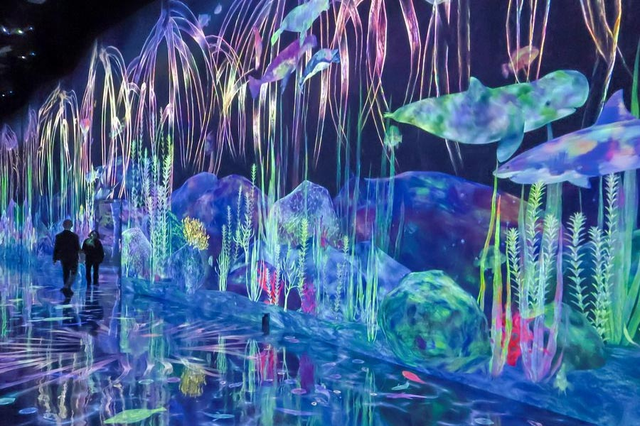

Características de sus obras

Sus obras se caracterizan por el uso de proyecciones digitales, sensores y sistemas informáticos que reaccionan a la presencia y el movimiento de los visitantes. En lugar de contemplar una obra estática, el público participa activamente en la construcción de la experiencia visual.
El objetivo de TeamLab es cuestionar las divisiones tradicionales entre las personas, la naturaleza y la tecnología. Sus instalaciones buscan generar una percepción más integrada del mundo, donde los límites físicos y conceptuales se vuelven difusos.
Obras y conceptos clave
- Universe of Water Particles
- Interactividad digital
- Flowers and People
- Arte inmersivo
- Borderless
- Planets
Interactividad y participación
La interactividad es un elemento central en las obras de teamLab. Las instalaciones están diseñadas para responder a los movimientos, gestos y acciones de los visitantes, creando experiencias únicas e irrepetibles. Por ejemplo, en algunas obras, las personas pueden influir en la trayectoria de las imágenes proyectadas o modificar la apariencia de una instalación mediante su presencia.


Metodología de trabajo
Su metodología de trabajo se basa en la colaboración entre estos distintos especialistas (artistas, ingenieros, programadores, etc) trabajan conjuntamente para desarrollar sistemas capaces de generar imágenes, sonidos y comportamientos dinámicos que responden al entorno y a la interacción humana.
Naturaleza y tecnología

Muchas de las creaciones de teamLab toman inspiración en fenómenos naturales como flores, agua, bosques o ciclos estacionales. Estos elementos son reinterpretados mediante herramientas digitales que permiten representar procesos complejos y dinámicos.
Lejos de presentar tecnología y naturaleza como conceptos opuestos, el colectivo propone una visión integrada. Sus obras sugieren que las herramientas digitales pueden ayudar a comprender mejor los sistemas naturales y las relaciones que los conectan. Las obras son concebidas como ecosistemas digitales donde cada elemento influye sobre los demás. Los movimientos de los visitantes pueden alterar la apariencia de una instalación, modificar trayectorias visuales o
provocar nuevas animaciones, creando experiencias únicas e irrepetibles para cada persona.
Uno de los conceptos fundamentales en la obra de teamLab es la idea de "sin fronteras". Sus instalaciones buscan romper las divisiones entre las obras individuales, permitiendo que las imágenes y los elementos visuales fluyan libremente entre distintos espacios. Esta propuesta también cuestiona
la separación entre espectador y obra. La experiencia artística deja de estar delimitada por un objeto específico y pasa a convertirse en un entorno compartido en constante evolución.